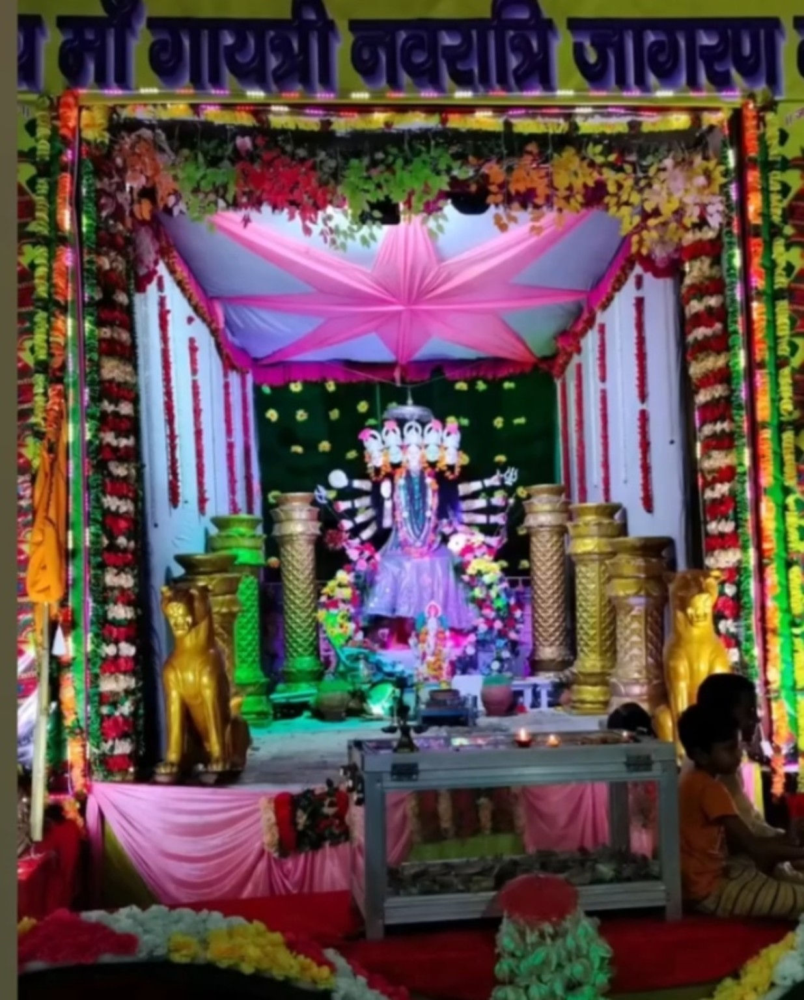

About Maa Gayatri Ji
आस्था, विश्वास और प्रेम से जुड़ा माँ का पावन दरबार।
माँ जी का परिचय
सन 1992 से माँ गायत्री जी हमारे यहाँ विराजमान हैं। वर्षों से माँ का यह पावन भवन भक्तों की आस्था, श्रद्धा और विश्वास का केंद्र बना हुआ है।
माँ का भोला-भाला और मनमोहक स्वरूप भक्तों के मन को अपनी ओर आकर्षित करता है। कोंच में माँ गायत्री जी का यह पावन स्वरूप भक्तों के लिए विशेष आस्था का केंद्र है और उन्हें “कोंच की महारानी” के रूप में प्रेम और श्रद्धा से याद किया जाता है।
माँ के दरबार में आने वाले भक्त अपनी श्रद्धा से शीश झुकाते हैं, पूजा-अर्चना करते हैं और माँ का आशीर्वाद प्राप्त करने की कामना करते हैं।
वर्षों से जलती आस्था की यह ज्योति यूँ ही प्रकाशित रहे,
और माँ गायत्री जी का आशीर्वाद सभी भक्तों पर सदैव बना रहे।
जय माँ गायत्री 🙏
Maa Ji — Since 1992
1992 से माँ गायत्री जी यहाँ विराजमान हैं।
वर्षों से यह पावन स्थान भक्तों की आस्था, श्रद्धा और विश्वास से जुड़ा हुआ है।

🛕 Maa Ka Bhawan
The Divine Abode of Maa Gayatri Ji
माँ का यह पावन दरबार भक्तों के लिए दर्शन, पूजा-अर्चना और श्रद्धा का सुंदर केंद्र है।
🙏 Bhakton Ki Aastha
Darshan
भक्त श्रद्धा से माँ के दर्शन करते हैं।
Aarti
माँ के दरबार में भक्ति और आरती का पावन वातावरण।
Utsav
उत्सवों और विशेष अवसरों पर भक्तों की सहभागिता।
🌺 बच्चों से जुड़ी एक सुंदर स्मृति
एक बार हमारे गायत्री जी पंडाल में छोटे-छोटे बच्चों के लिए गायत्री मंत्र का अर्थ बताने की प्रतियोगिता आयोजित की गई थी। बच्चों ने उत्साह के साथ भाग लिया और विजेता बच्चे का सम्मान भी किया गया।
ऐसे प्रयास भक्ति के साथ बच्चों को मंत्र, संस्कार और अपनी परंपरा से जोड़ने की सुंदर यादें बनाते हैं।